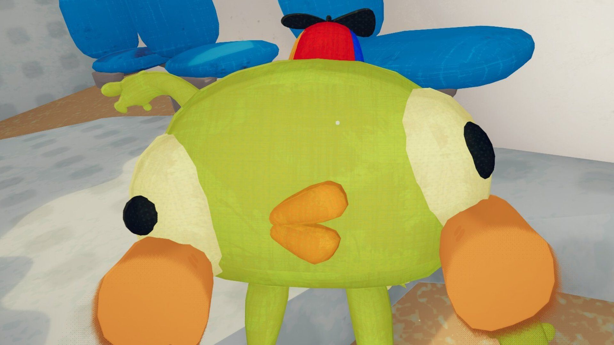

Peak Mod (Plushie Party)
Stack: Unity / C# / Modding
Plushie Party is a custom mod for the game Peak, adding a new gameplay mechanic. This game modifies the Bing Bong plushie to assist the player, by granting beneficial status effects depending on the zone the player is in.